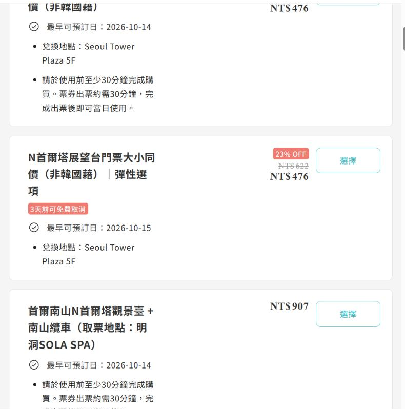
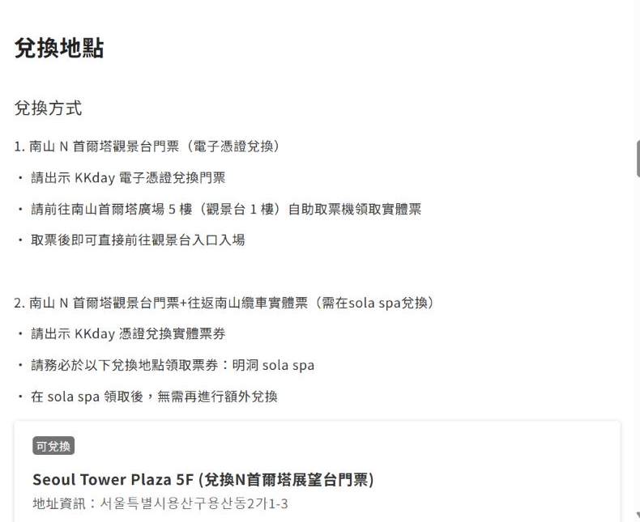
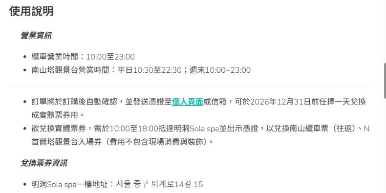
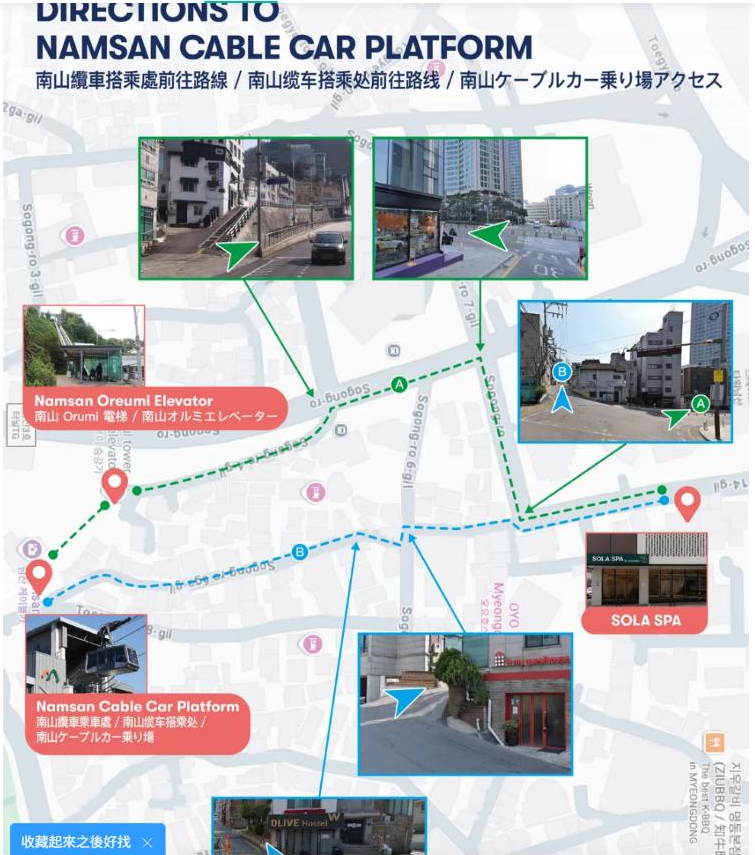
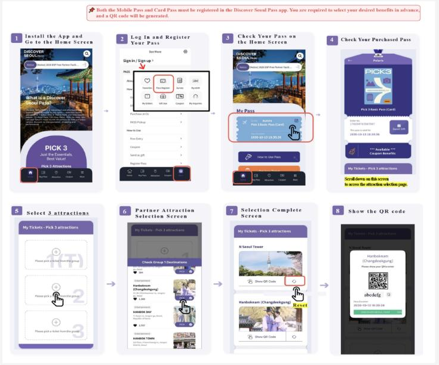
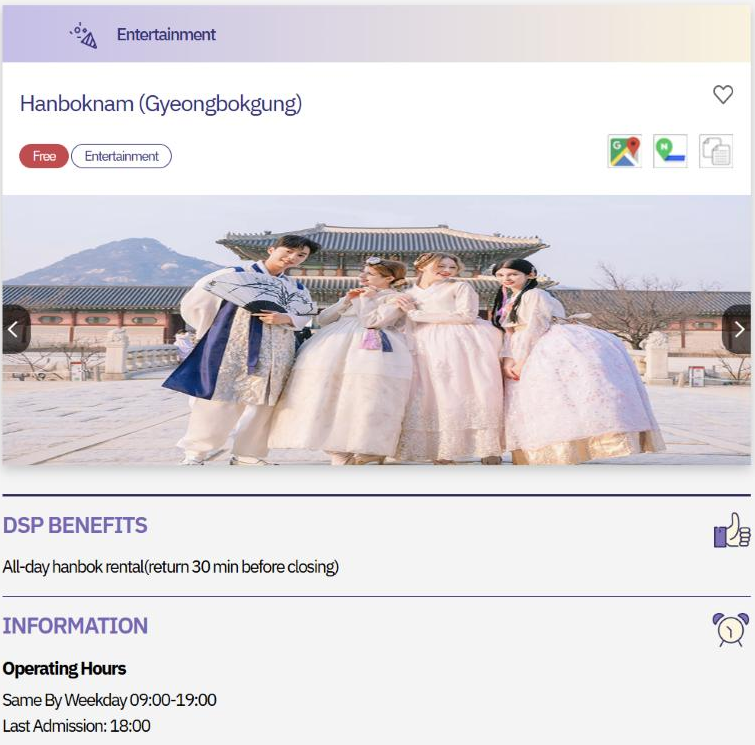

KOREA TRIP · 2026/11/18–24
首爾 9 景點
購票與攻略
票價、開放時間、購票方法，加上部落客與網友的近期實訪心得
景福宮
N 首爾塔
南山纜車
北村韓屋村
廣藏市場
南大門市場
明洞
弘大
聖水洞
資料整理於 2026/10/13 ・ 紅色＝需購票，深色＝免費入場 ・ 票價與營業時間以現場為準
總覽
9 個景點一張表看完
| 景點 | 成人費用（韓元） | 11 月開放時間 | 休息日 | 購票方式 |
|---|---|---|---|---|
| 景福宮 | ₩3,000（穿韓服免費） | 09:00–17:00（16:00 停止入場） | 週二 | 光化門現場買 |
| N 首爾塔 | ₩29,000（網路平台較便宜） | 平日 10:00–22:30 週末 10:00–23:00 | 無 | Creatrip／Klook 等外國人票 |
| 南山纜車 | 來回 ₩15,000／單程 ₩12,000 | 10:00–23:00 | 無 | 現場買（或套票） |
| 北村韓屋村 | 免費 | 限 10:00–17:00 參觀 | 無 | 不需購票 |
| 廣藏市場 | 免費（小吃自費） | 美食街約 09:00–23:00 | 布料店週日休 | 不需購票 |
| 南大門市場 | 免費 | 以白天為主，各店不同 | 週日多數休 | 不需購票 |
| 明洞 | 免費 | 小吃攤約 17:00–21:00 | 無 | 不需購票 |
| 弘大 | 免費 | 店家多約 10:00–23:00 | 無 | 不需購票 |
| 聖水洞 | 免費（部分快閃需預約） | 快閃店多約 11:00–20:00 | 依店家 | 熱門快閃用 NAVER 預約 |
來源：各景點官方資訊、韓國觀光公社、Creatrip、首爾市政府 ・ 票價與時間以現場為準
需購票 ① ・ 경복궁
景福宮：穿韓服就免費
票價
成人（19–64 歲）₩3,000 ・ 7–18 歲 ₩1,500
6 歲以下、65 歲以上、穿著完整韓服免費
開放時間
11–2 月 09:00–17:00（16:00 最後入場）
每週二休館（遇國定假日改隔天休）
怎麼買
光化門進去右手邊售票處現場買，不需預約。免費中文導覽：週三至週一 10:30、15:00
網友怎麼說
- 韓服要穿「上衣＋裙／褲」整套，只披外套或混搭現代服不算
- 守門將換崗儀式免費，10:00、14:00 各一場；先看儀式再穿韓服入宮是經典路線
- 韓服店多營業到 18:00 左右，11 月 16:00 就停止入場，租借要抓早
- 秋季夜間開放今年 9/2–10/2 已結束，11 月沒有夜間場
地址（複製到 NAVER Map）
경복궁 ・ 서울 종로구 사직로 161
3 號線景福宮站 5 號出口；安國站步行約 9 分
來源：韓國觀光公社 ktriptips、Creatrip（2026）、HaniSeoul、Trvlogue 夜間開放實訪（2026/9） ・ 以現場為準
需購票 ② ・ N서울타워
N 首爾塔：展望台票先上網買
票價（展望台）
現場定價：成人 ₩29,000／兒童・65 歲以上 ₩23,000
塔下廣場 B1–4F 的餐廳、商店、愛情鎖平台免費
開放時間
平日 10:00–22:30 ・ 週末 10:00–23:00
售票在關門前 30 分鐘截止，全年無休
怎麼買
Creatrip、Klook、Pelago 有「外國護照限定」電子票，比現場便宜。到 Plaza 5F 展望台入口掃 QR 換實體票；含纜車的套票要先到明洞 SOLA SPA 換票
網友怎麼說
- 傍晚日落前上去最划算，一次看到白天和夜景；11 月下旬首爾約 17:15 日落
- 展望台電梯約 30 秒，下樓也要排隊，建議先換好票
- 男廁小便斗面對整片落地窗，是網友必提的「景觀廁所」
- 網路舊文寫 ₩21,000 或 ₩16,000 是舊價，2026 年多數資料為 ₩29,000
地址（複製到 NAVER Map）
N서울타워 ・ 서울 용산구 남산공원길 105
上山：纜車（下頁）或南山循環巴士 01A／01B
來源：韓國觀光公社 ktriptips（2026/5 更新）、Trip.com（2026/4）、Creatrip、Pelago、Polle 網友評論 ・ 以現場為準
需購票 ③ ・ 남산 케이블카
南山纜車：只能現場買，要預留排隊
票價
成人（國中以上）來回 ₩15,000／單程 ₩12,000
兒童（36 個月～小學）來回 ₩11,500／單程 ₩9,000
開放時間
每日 10:00–23:00，全年無休
售票截止：來回 22:30 ・ 單程 22:45（天候不佳可能停駛）
怎麼買
下站售票處現場買，沒有單獨線上預約；想省排隊可買「展望台＋纜車」套票（明洞 SOLA SPA 換票，18:00 前）
網友怎麼說
- 韓媒報導：運量每小時僅 400–500 人，週末傍晚常要等 1–2 小時
- 多數部落客推薦買來回，單程只差 ₩3,000，下山走路很累
- 從明洞站 4 號出口走到會賢十字路口，搭免費的「南山傾斜電梯」就不用爬坡
- 不想排隊：搭循環巴士 01A／01B 直達塔下，交通卡約 ₩1,400
地址（複製到 NAVER Map）
남산 케이블카 ・ 서울 중구 소파로 83
車程約 3 分鐘；新建的南山貢多拉 2027 年後才會完工
來源：Trvlogue（2026）、Uptogo、Postype、世界日報 Segye（2026/1）、The Fact（2026/8） ・ 以現場為準
免費 ① ・ 북촌한옥마을
北村韓屋村：17:00 後進紅區會被罰
紅區（特別管理地區）規定
10:00–17:00
只能在這段時間觀光；17:00～隔天 10:00 進入北村路 11 街一帶（約 34,000㎡）罰 ₩100,000。2025/3/1 起正式開罰
票價與購票
免費，不需購票。這裡是真的有人住的住宅區，禁止大聲喧嘩、闖入民宅、亂丟垃圾
網友怎麼說
- 10:00 一開放就進去，團客還沒到，最好拍沒人的巷弄
- 搭公車到上坡處再往下走，比從安國站一路爬坡輕鬆
- 景福宮、三清洞、仁寺洞都走得到，常排成同一天
- 有部落客寫「週日核心巷弄不開放」，官方公告沒提到，以現場告示為準
地址（複製到 NAVER Map）
북촌한옥마을 ・ 서울 종로구 북촌로11길 일대
3 號線安國站 2 號出口步行約 10 分
來源：首爾市政府公告、韓國觀光公社 ktriptips（2025/4）、公視、風傳媒、Uptogo ・ 以現場為準
免費 ② ・ 광장시장
廣藏市場：好吃，但點餐前先問價
開放時間
美食街約 09:00–23:00，全年營業
布料、韓服、二手衣店約 09:00–18:00，週日休；各攤時間不同
必吃：綠豆煎餅、麻藥飯捲、生拌牛肉、刀切麵
2026 價格爭議
今年仍有網友回報帳單金額對不上、加點價不清楚，甚至 500mL 瓶裝水賣 ₩2,000。首爾市已稽查，6 月起推行攤位實名制
網友怎麼說
- 入口攤位最觀光化，往美食走廊裡面多走一段再選
- 挑有逐項標價看板的攤位，套餐、飲料加點前先確認
- 帶小鈔現金，結帳比較乾脆
- 順熙家綠豆煎餅：2026/9 平日 13:47 到不用排，一片約 US$4，可刷卡
地址（複製到 NAVER Map）
광장시장 ・ 서울 종로구 창경궁로 88
순희네빈대떡 ・ 서울 종로구 종로32길 5
鍾路 5 街站 7／8 號出口・乙支路 4 街站 4 號出口
來源：首爾市 Mediahub、Creatrip（2026）、Trvlogue 實訪（2026/9）、韓國觀光公社 ・ 以現場為準
免費 ③ ・ 남대문시장
南大門市場：白天去，週日別去
開放時間
約 1 萬間店、各自營業，白天最熱鬧，晚上多數攤位已收
週日與韓國國定假日多數店家公休
付款
以現金為主、可以議價、不退貨；部分店家可刷卡但會加手續費
必吃・必逛
魚糕條、手工餃子、刀切麵巷、糖餅；童裝、廚房用品、人蔘、海苔伴手禮
網友怎麼說
- 比廣藏市場更生活化，小吃 CP 值是幾個市場裡最高的
- 範圍是整片街區不是一棟建築，光逛就要半天
- 會賢站 6 號出口一出來就有諮詢台，可拿地圖、用英文問
- 廁所多在大樓 1F 或 B1，離地鐵站有段距離先上好
地址（複製到 NAVER Map）
남대문시장 ・ 서울 중구 남대문시장4길 21
4 號線會賢站 5／6 號出口；走到明洞約 10 分
來源：飄兒 Bring You（2025/8）、Creatrip（2026）、Asoview ・ 營業時間各店不同，以現場為準
免費 ④ ・ 명동
明洞：方便好逛，小吃最貴
開放時間
街頭小吃攤約 17:00–21:00 最熱鬧
美妝店、服飾店多營業到 22:00 左右
價格提醒
Creatrip 估明洞夜市小吃比在地市場貴 30%–60%；不少攤位可刷卡。想吃得划算就去南大門或廣藏
搭配樂天觀光卡
樂天百貨明洞本店就在旁邊，辦卡與優惠見另一份「樂天觀光會員卡攻略」
網友怎麼說
- 明洞是觀光客取向，吃小吃當體驗，正餐另找店
- 早餐首選 Isaac Toast（07:00 開，₩5,500 起），平日下午也常有人排
- 一人用餐：以南場雪濃湯、小雞海苔飯捲；深夜：BBQ 明洞 Star 店到 01:30
- 走到南山纜車約 10 分，晚上可接首爾塔夜景
地址（複製到 NAVER Map）
명동 ・ 서울 중구 명동길 일대
이삭토스트 명동 ・ 明洞站 8 號出口
4 號線明洞站；2 號線乙支路入口站
來源：Creatrip 街頭美食指南（2026）、Creatrip 明洞美食（2026/5）、HaniSeoul ・ 價格以現場為準
免費 ⑤ ・ 홍대
弘大：年輕在地，晚上最熱鬧
怎麼逛
弘大入口站 8・9 號出口＝主商圈；3 號出口＝延南洞與京義線林道（咖啡廳、較安靜）；再往外是合井、望遠市場
店家時間
Olive Young 弘大 Town 旗艦店 10:00–23:00
OFFLINE DUTY FREE（可現場退稅）12:00–22:00
交通
2 號線、機場鐵路 AREX 都停弘大入口站；從明洞搭 2 號線乙支路入口站直達
網友怎麼說
- 比明洞更多韓國人光顧，吃的口味和 CP 值都比較好
- 街頭表演、練歌房、夜生活是重點，23:00 後還很熱鬧
- 美妝推 HEMEKO 與三層樓的 Olive Young 弘大 Town 店
- 範圍太大，第一次去先鎖定「主街＋延南洞」兩區就好
地址（複製到 NAVER Map）
올리브영 홍대타운 ・ 서울 마포구 홍익로6길 57
헤메코 홍대점 ・ 서울 마포구 홍익로 25 B1
弘大入口站 홍대입구역
來源：飄兒 Bring You（2026/5）、Creatrip 弘大總整理與購物推薦、Creatrip 街頭美食指南（2026） ・ 以現場為準
免費 ⑥ ・ 성수동
聖水洞：快閃店每週換，出發前再查
怎麼逛
2 號線聖水站 3 號出口 → 연무장길（延武場街），旗艦店多在出口步行 10 分內；往西走是首爾林
時間與預約
快閃店多約 11:00–20:00，檔期 3 天到 2 個月、平均 1–2 週；熱門檔常要 NAVER 或官網事先預約，平日人比較少
固定可逛
MUSINSA Mega Store 聖水（B1–4F，2F 有美妝）、SM 的 KWANGYA、Common Ground、倉庫咖啡廳
網友怎麼說
- 2026 年 4 月時聖水同時有 60 個以上快閃店，一天逛不完
- 9 月部落客實訪的辛拉麵、賓士、米飛兔快閃，11 月多半已撤
- 韓文電子報「위픽레터」每週整理聖水快閃清單，出發前一週查最準
- 老工廠改建的文青街區，咖啡廳和選物店密度比弘大更高
地址（複製到 NAVER Map）
연무장길 ・ 서울 성동구 연무장길
2 號線성수역 3 號出口；從乙支路入口站直達不用轉車
來源：Trvlogue 聖水快閃踩點（2026/9）與 MUSINSA 開箱、위픽 마케팅 위키（2026/7）、Namane Card 指南 ・ 快閃資訊以官方公告為準
線上購票 ①
哪些能線上買？各平台比價
| 景點 | 平台售價（10/13 查詢） | 現場價 | 建議 |
|---|---|---|---|
| N 首爾塔展望台 | KKday NT$476 ・ Klook 約 US$15.3 Pelago ₩14,500 | ₩29,000 | 線上買；外國護照限定 |
| 展望台＋纜車來回 | KKday NT$907 ・ Creatrip TWD 981 Klook 約 US$28.2 ・ Pelago ₩31,100 | ₩29,000＋₩15,000 | 比分開買貴，不建議 |
| 南山纜車（單買） | 各平台都沒有單賣 | 來回 ₩15,000 | 現場買，或改買套票 |
| 景福宮 | 無單張電子票；KKday 西花韓服 NT$559 起 | ₩3,000 | 現場買，或租韓服免門票 |
| 北村・市場・商圈 | 不需門票 | 免費 | — |
買之前看清楚
Klook 首爾塔票不能取消、退款或改期；KKday 只有「彈性選項」可 3 天前免費取消，套票須當天兌換；Creatrip 套票售出後不退改。
來源：KKday 商品 #13903、Creatrip、Klook 商品頁 412、Pelago（2026/10/13 查詢） ・ Klook 頁面需人機驗證，未截圖 ・ 以結帳頁為準
線上購票 ② ・ 流程整理（實際畫面見下兩頁）
買好電子票後，現場這樣換
A. 只買展望台
1
Email 或 App 收到含 QR 的電子憑證
2
搭纜車或巴士上山，到 Plaza 5F 展望台入口
3
在自助機掃 QR，印出實體票
4
持票進電梯，約 30 秒到展望台
B. 展望台＋纜車套票（Klook／KKday／Creatrip 都一樣）
1
帶護照和電子憑證到明洞 SOLA SPA 1F
2
18:00 前換到纜車＋展望台實體票
3
走到纜車下站，持實體票排隊搭乘
4
塔上 5F 出示門票領電梯號碼，叫號後搭乘
SOLA SPA 명동 ・ 서울 중구 퇴계로14길 15 1층
換票時間 10:00–18:00；沒換實體票不能直接搭纜車
來源：KKday 商品 #13903、Creatrip 套票頁、Klook 商品頁 412 ・ 以憑證上的兌換說明為準
實際畫面 ① ・ KKday 商品頁（2026/10/13 截圖）
KKday：選方案，再看換票地點

① 三個方案：選「彈性選項」才可 3 天前免費取消

② 兌換方式：單買→塔上 5F 自助機；套票→明洞 SOLA SPA
注意
使用前至少 30 分鐘下單；韓國籍不能買；3 歲以上買成人票
截圖來源：KKday 商品 #13903「南山 N 首爾塔展望台電子門票」 ・ 價格為截圖當天，以結帳頁為準
實際畫面 ② ・ Creatrip 套票頁（2026/10/13 截圖）
套票：SOLA SPA 換票後走去纜車站

Creatrip 套票 TWD 981（VIP TWD 912），可在 2026/12/31 前任選一天換票。
未換實體票的憑證不能在纜車站或塔上直接用；18:00 後不能換。

SOLA SPA → 纜車搭乘處步行路線圖
截圖來源：Creatrip「N首爾塔觀景台、南山往返纜車套票」 ・ SOLA SPA：서울 중구 퇴계로14길 15 1층
線上購票 ③ ・ 我們的購票方案
結論：不買通票，三張票分開買
| 項目 | 怎麼買 | 每人約 |
|---|---|---|
| N 首爾塔 | KKday「彈性選項」電子票（3 天前可免費取消） | NT$476 |
| 南山纜車 | 現場買來回，用 WOWPASS 刷卡 | ₩15,000（≈NT$359） |
| 景福宮 | 光化門現場買 | ₩3,000（≈NT$72） |
| 合計 | ≈NT$907 |
為什麼不買套票
KKday 展望台＋纜車套票 NT$907，比分開買的 ≈NT$835 貴，還要 18:00 前先到 SOLA SPA 換票；纜車上車照樣要排隊
Pick 3 Basic 為什麼不划算
- 優惠後 ₩41,650，你們只用得到首爾塔＋景福宮，約 ₩23,000
- 附的 eSIM 只有 5 天，7 天行程不夠
- 交通卡、AREX 功能已有 WOWPASS 與接送
- 不租韓服，景福宮那格只值 ₩3,000
72 小時通票 ₩90,000、宮殿通票 ₩6,000、Klook Pass Seoul 也都用不到
匯率以 1 TWD ≈ 41.8 KRW 估算（鉅亨網 2026/10/13） ・ 價格為 10/13 查詢，以結帳頁與現場為準
實際畫面 ③ ・ Discover Seoul Pass 官網（2026/10/13 截圖）
Pick 3 怎麼用：App 先選 3 個景點

官方 8 步驟：裝 App → 註冊通票 → 選 3 景點 → 出示 QR

韓服男景福宮店：持通票全天韓服免費
現場：櫃台出示 App 的 QR，換紙本或電子入場券
選錯：還沒用過任何景點前，可在 App 重選
纜車不在名單內
截圖來源：discoverseoulpass.com 公告「PICK 3 Pass Quick Guide」、景點頁 Hanboknam (Gyeongbokgung) ・ 以 App 顯示為準
排程 ・ 11/18–24 ・ 依旅伴 10/25 框架
每天去哪裡
| 日期 | 住宿 | 安排 | 要注意 |
|---|---|---|---|
| 11/18（三） | 鍾路 Momento | 抵達 → 晚上弘大逛街、晚餐 | 鍾路到弘大地鐵約 30 分 |
| 11/19（四） | 鍾路 Momento | 景福宮 → 北村；有時間再去南山纜車＋首爾塔 | 北村紅區 17:00 後禁入；日落約 17:15 |
| 11/20（五） | 移往雲西 | 11:00 退房 → 廣藏市場 → AREX 到雲西 | 先請 Momento 寄放行李 |
| 11/21（六） | 雲西 豪生 | 演唱會週末（同行者 18:00 場） | 不排首爾市區 |
| 11/22（日） | 移往明洞 | 同行者 16:00 場；晚上回首爾吃營業較晚的烤肉 | 週日不少烤肉店休或早關 |
| 11/23（一） | 明洞 東方 | 聖水洞購物 | 快閃店多 11:00 後開 |
| 11/24（二） | 回程日 | 11:00 首爾站午餐 → 12:20 AREX 去機場 | 景福宮週二休館 |
這版框架沒排南大門市場與明洞夜市；首爾塔改成 11/19 有空才去。
2026/10/25 依旅伴整理的框架更新 ・ 各景點開放時間見前面各頁 ・ 以現場為準